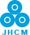
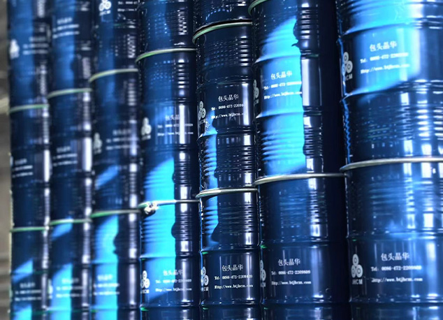
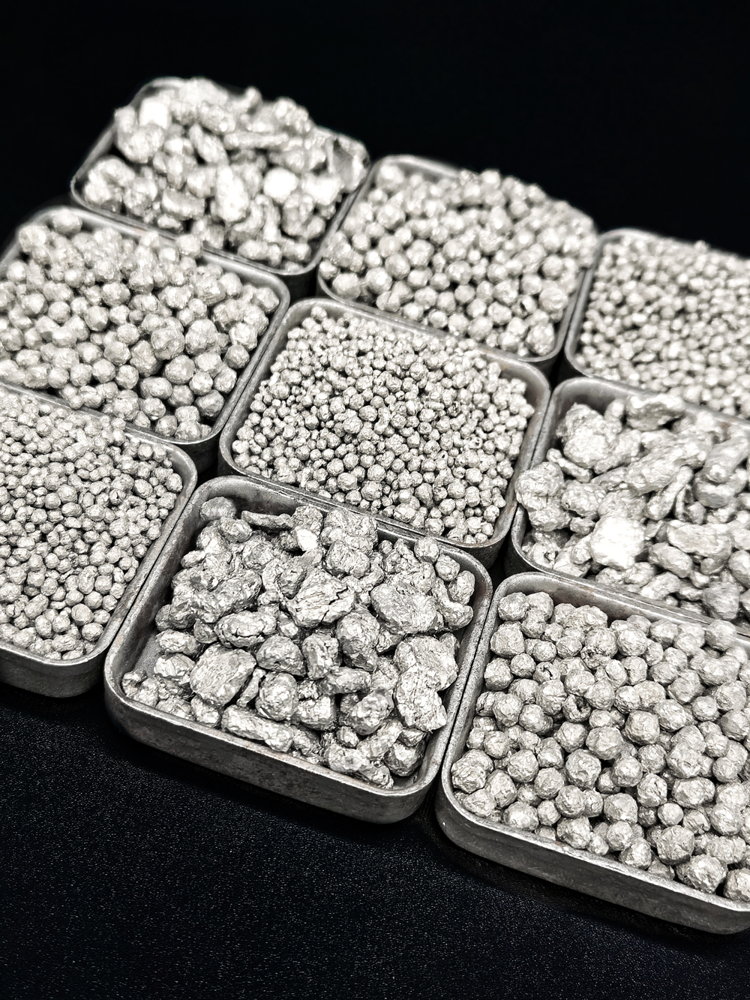
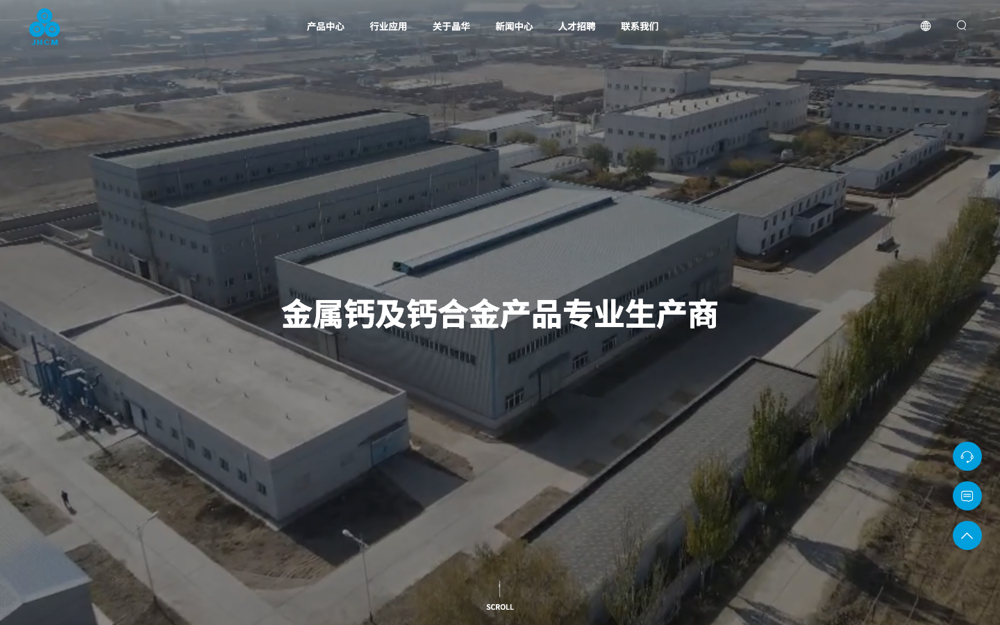
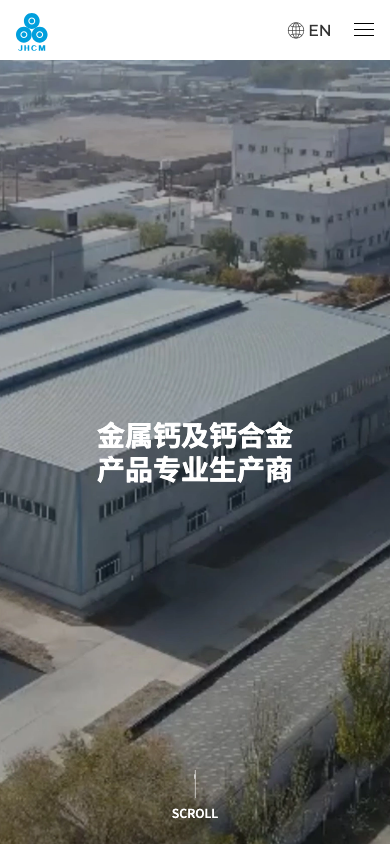

Ca / 20ELEMENT
TO USE
TO USE
01 / MATERIAL FIRST
先让采购者看见材料的真实状态
银白金属钙、颗粒、合金和工厂现场，让抽象化学元素变成可识别、可讨论的产品对象。

JH / CALCIUMCASE STUDY 00901 / READING MAP
晶华金属钙业的首页并不从公司口号开始，而是先给出产品与应用，再用四个能力卡、工厂图像、新闻和联系方式承接信任。对工业材料网站来说，这是一条“元素—形态—工艺—采购”的实用阅读顺序。
银白金属钙、颗粒、合金和工厂现场，让抽象化学元素变成可识别、可讨论的产品对象。
金属钙与钙系合金，覆盖多种形态、化学指标、纯度、尺寸和定制要求。
PRODUCT FAMILIES / OBSERVED钢铁铸造、有色金属冶炼、石油化学、电池，产品解释回到具体用途。
APPLICATIONS / OBSERVED品类齐全、质量稳定、工艺环保、资质齐全，成为首页的信任收束。
CAPABILITY CARDS / OBSERVED02 / PRODUCT MATRIX
原站产品中心用“金属钙 / 钙系合金”两层导航收敛复杂目录，二级再列钙粒、钙块、钙屑、钙丝、钙压块和不同合金。案例页保留“家族—形态—指标—询价”的决策路径。
FAMILY 01 · CALCIUM METAL
银白色活泼金属，首页自述可按钙锭、钙块、钙屑、钙粒、钙丝、钙压块等形态供货，并支持化学指标、纯度、形态和尺寸的定制讨论。
进入原站分类 ↗把纯度、粒径、尺寸、包装、交期和检测报告作为详情页字段；不要只写“高品质”而不给采购者下一步。
03 / APPLICATION MAP
应用区将金属钙从“材料名词”翻译为脱氧、脱硫、还原、蓄电池等工业任务。四张卡片应该成为可点击的场景入口，而不是只能悬浮放大的装饰图。
04 / CAPABILITY SIGNALS
品类齐全、质量稳定、工艺环保、资质齐全是原站的四个优势模块。它们的价值在于对应采购顾虑：能不能配、批次稳不稳、环保风险高不高、能否合法出口。
覆盖化学指标、纯度、形态、尺寸等多样要求。
SPEC / SHAPE / SIZE公开自述拥有制造工艺、生产经验、管理流程与质量检测环节。
PROCESS / QA / TRACE公开自述持续改进生产工艺，并提出单位碳排放对比值。
CARBON / VERIFY公开自述包含生产、安全、质量、环境、员工管理及自营出口资格。
COMPLIANCE / EXPORT05 / MANUFACTURING STORY
官网使用厂区航拍、工厂图组和“创新型制造工厂”叙事建立源头生产商印象。重构时应把图像继续连接到产能、质量、检测、包装、出口和售后，而不是止步于氛围。

06 / KNOWLEDGE RHYTHM
原站最新新闻并不只发布企业动态，还解释如何选择金属钙供应商、钙氧电池等材料知识。对工业材料官网，这种“知识 + 采购判断”比泛化新闻更有复用价值。

08 / RESPONSIVE AUDIT
原站桌面端使用透明导航、视频 Hero、横向产品/应用内容和右侧浮层；移动端切换白色 Header、抽屉菜单、静态 Hero 图和单列模块。重构时要确保视频有 poster、导航可键盘操作、联系入口不遮挡正文。


KEEP
REFINE
09 / AI INSTRUCTIONS
以下规则适用于金属、合金、化工原料和工业材料官网。复制产品—应用—质量—工厂的逻辑，不复制晶华的事实、照片和企业承诺。
先让访客选金属钙/钙系合金，再列粒、块、屑、丝、压块、牌号、纯度、包装与交期。
钢铁不是抽象行业；脱氧、脱硫、还原和蓄电池才是采购者能验证的任务与入口。
“质量稳定、工艺环保、资质齐全”后面要有报告、证书、批次、检测、有效期或联系人。
成立年份、碳排放对比、出口国家数和产能等信息记录观察日期与来源，不自动升级为事实。
视频、视差、Swiper 和悬浮卡都要提供静态退路、键盘焦点、触屏反馈和 reduced-motion 支持。
10 / SOURCE ARCHIVE
本案例保留晶华中文首页、主 CSS/JS、Swiper/WOW/GSAP/ScrollTrigger 依赖、Hero 视频、产品与应用图片、工厂图组、联系图标和桌面/手机截图。完整映射与清理边界见 manifest.md。
ORIGINAL SITE CONTACT
+86 472 298 9818info@btjhcm.com中国内蒙古包头市九原工业园区南绕城路42公里